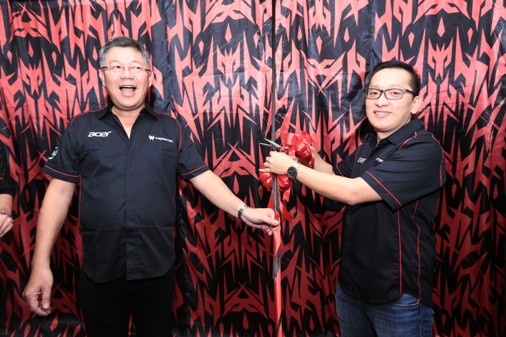

All About Life
kumpulan artikel-artikel kehidupan sehari-hari
Predator Store Resmi diBuka
Banyak yang sudah mengenal produk-produk gaming bernama Predator, nama ini begitu mencuat setahun belakangan ini setelah sukses menawarkan sejumlah kenyamanan produk bagi para gamers.
Memang banyak yang sudah memakai produk ini dan kebanyakan dari mereka merasa puas dan nyaman. Kenyamanan konsumen ini dirasa sebagai peluang besar bagi Acer Indonesia, oleh karena itu Acer Indonesia memutuskan untuk membuat Predator Store yang mana khusus untuk melayani pembelian dan service produk dari predator.
Predator Store secara resmi di buka di Mangga Dua Mall, Jakarta beberapa hari lalu. Hal ini dinyatakan langsung Herbet Ang selaku President Director Acer Indonesia bahwa peresmian Predator Store ini merupakan salah satu bukti komitmen dan keseriusan Acer untuk lebih mendekatkan diri pada para gamers yang ada di Indonesia.
Herbet Ang juga menambahkan kalau Acer akan memberikan layanan on site service selama satu tahun untuk seluruh pengguna Acer Predator di beberapa kota besar di Indonesia. Nantinya melalui on site service ini para teknisi Acer dapat langsung mendatangi tempat sobat apabila produk Predator sobat masalah. Keren bukan?
on site service ini hanyak berlaku bagi pengguna yang berada di jarak kurang dari 30km. Jadi kalau rumah sobat jaraknya lebih dari 30km dari service point terdekat, maka sobat harus membawa produk sobat sendiri ke sana.
"Di dalam Predator Store, para konsumen secara langsung bisa mendapatkan pengalaman dari beragam produk-produk Acer Predator yang kami tampilkan dan juga merasakan bermain game balapan roda empat dengan Predator Pod, yakni sebuah booth yang berisikan layar Predator X34, Desktop Predator G6 steering wheel, pedal dan shifter, layaknya sebuah mobil," ujar Presiden Direktur Acer Indonesia, Herbet Ang.
Predator Store memiliki nuansa gaming dengan kombinasi warna khas merah dan hitam yang dominan. Di salah satu sudutnya terdapat experience zone, yang mana para pengunjung dapat merasakan perangkat Predator dari Acer.
Selain perangkat-perangkat Predator, Predator Store juga menawarkan produk-produk gaminglainnya seperti Aspire V Nitro dan Aspire V15. Aspire V Nitro merupakan jajaran notebook gamingAcer.